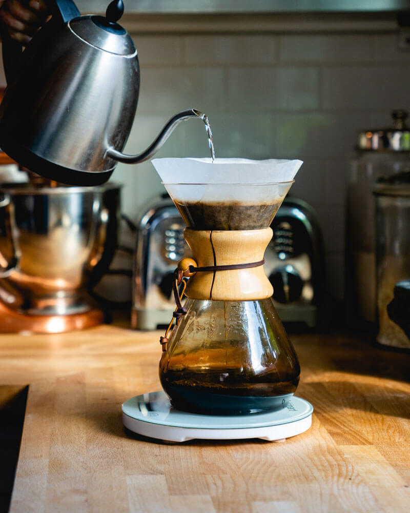
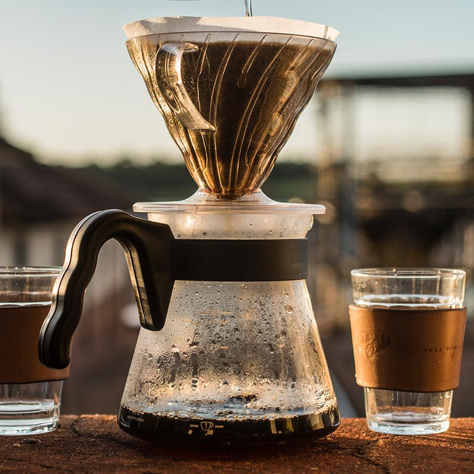

Chemex
Diferente dos demais filtros de métodos coados, o filtro da Chemex é feito com um círculo de papel mais grosso, que é dobrado em quatro e encaixado na base. O resultado é que, em um dos lados, forma-se uma camada tripla de papel que absorve óleos e torna o café produzido na cafeteira um dos mais limpos e sem resíduos..

Prensa Francesa
Também conhecida como “french press” ou “cafetière”, a prensa francesa é um método bastante popular e fácil, que utiliza as técnicas de infusão e filtragem.

Hariov60
Se você gosta de um bom café coado, vale a dica de conhecer o Hario V60; o porta-filtro, de design especial, possui características que interferem na extração e, consequentemente, na qualidade do café..